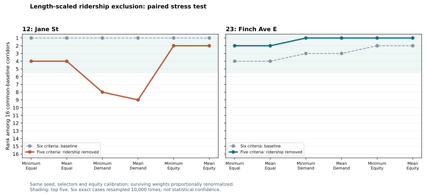
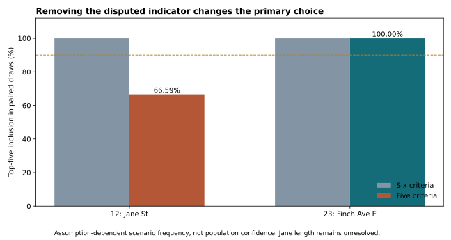

Current provisional primary: 23 — Finch Ave E, Yonge St to Victoria Park Ave
Five scored criteria · 10,000 paired draws · 40 tests passed · source values preserved
The source assigns 4.076 km as corridor 12's assumed construction length, without a single-side or extension note. The two Jane lengths may be transposed; no official correction or internal score denominator has been confirmed. We exclude the disputed metric rather than invent a corrected score.
| Corridor | Top five before | Top five after | Five-criterion ranks |
|---|---|---|---|
| 12 Jane St | 100% | 66.59% | 2–9 |
| 23 Finch Ave E | 100% | 100% | 1–2 |


Same selectors, source scores, equity calibration and tier isolation; surviving weights proportionally renormalized. Frequencies describe six declared scenarios, not statistical confidence. Task 1 is not yet complete, and the Jane source issue remains unresolved.
Full audit and method · Stress validation · Updated review slides · Original Table 2 image